Descubrimiento y análisis
Interroga briefs, emails o PRD hasta alcanzar el 80% de claridad en 8 categorías, o parte de cero con preguntas estructuradas.
Plugin no oficial para Claude Code. Descubrimiento de producto, historias de usuario con criterios Given/When/Then, planificación de sprint con factor IA y publicación en Trello, Notion o GitHub Projects. Todo desde tu terminal.
Un flujo completo de Product Owner que vive dentro de Claude Code y persiste todo en Markdown antes de publicar nada.

Interroga briefs, emails o PRD hasta alcanzar el 80% de claridad en 8 categorías, o parte de cero con preguntas estructuradas.
Formato Como / Quiero / Para con criterios Given/When/Then, escenarios positivos y negativos, diagramas Mermaid y estimación por tallas.
Calcula la capacidad real de equipos que trabajan con agentes (factor configurable 30-80%) y sugiere recortes cuando el sprint no cabe.
Cada historia llega con resumen, fichero .md adjunto, checklist de DoD, dependencias y asignación real de miembros. Sin duplicados. En GitHub, tarjetas en un Project v2 privado.
Deja un brief y un CSV de equipo en una carpeta y el flujo completo se ejecuta solo hasta la puerta de decisión final.
Credenciales fuera del chat, bloqueo de curl directo a las API, avisos en lecturas sensibles y gates de fase que no se saltan.
Solo necesitas Claude Code y Python 3.8+. Sin npm, sin pip, sin compilación.

curl -fsSL https://raw.githubusercontent.com/686f6c61/PSPO-Agent/main/install.sh | bash
irm https://raw.githubusercontent.com/686f6c61/PSPO-Agent/main/install.ps1 | iex
/pspo-agent:start. El asistente de onboarding configura el proveedor remoto, valida credenciales y deja listo el destino de publicación.
Cada fase la lleva un especialista con su propio criterio y sus propias reglas.
